ブラウザでチームのURLを開き、チーム共通のパスワードを入力します。 メールアドレスの入力は要りません。5人とも同じパスワードです。
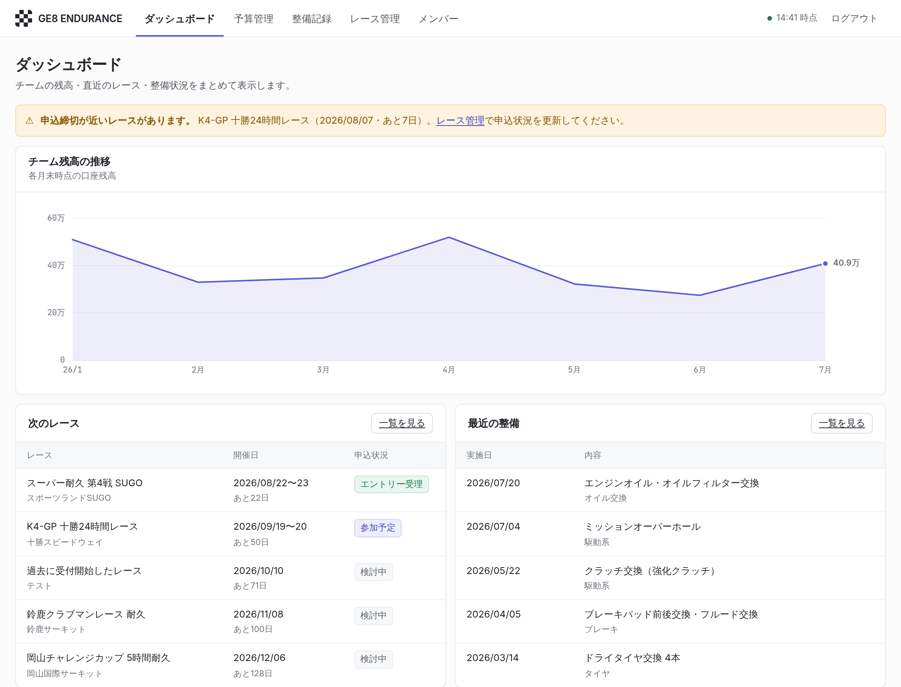
ログイン状態はブラウザに保存されます。毎回パスワードを入れる必要はありません。 共用のパソコンを使ったときだけ、右上の「ログアウト」を押してください。
同じURLをスマホのブラウザで開くだけです。専用アプリのインストールは要りません。 ブラウザのメニューから「ホーム画面に追加」しておくと、アイコンから一発で開けます。
5人が同じアカウントでログインするため、アプリ側からは「今どのメンバーが操作しているか」が分かりません。 メンバー画面で自分の名前を一度だけ選んでおいてください。 立替をしたときの「立替者」が最初から自分になり、入力が1手減ります。
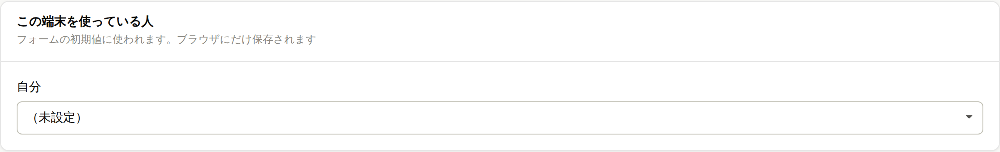
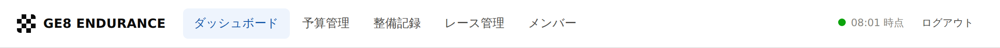
| ダッシュボード | 残高の推移、次のレース、最近の整備・支出をまとめて見る画面 |
|---|---|
| 予算管理 | 収入・支出の登録、立替の精算、スプリントの管理 |
| 整備記録 | 整備の内容を走行距離とあわせて残す |
| レース管理 | 出場レースの日程・参加費・申込状況の管理 |
| メンバー | メンバーの追加・名前の変更、「自分」の設定 |
誰かが支出を登録すると、他の4人の画面も自動で更新されます。 リロードは不要です（画面右上に最終更新の時刻が出ます）。
このアプリの「チーム残高」は、チーム口座に今いくら入っているかです。 通帳の残高と一致するように作ってあります。ポイントは立替の扱いです。
| お金の動き | 残高への反映 |
|---|---|
| 収入（会費・スポンサー・部品売却など） | 入金日に増える |
| 支出（チーム口座払い） | 支払日に減る |
| 支出（個人立替） | 立替た日には動かない。本人に返金した日に減る |
誰かが自腹で払った時点では、チームの口座からはまだ1円も出ていないからです。 「返すべきお金」は別枠で表示され、全部返した後に残る額もあわせて出ます。 通帳と見比べるときは「チーム残高」を見てください。
予算管理の画面右上、「収入を登録」から入力します。
「支出を登録」から入力します。いちばん大事なのは支払元です。 チームの口座から払ったのか、誰かが自腹で立て替えたのかを必ず選んでください。
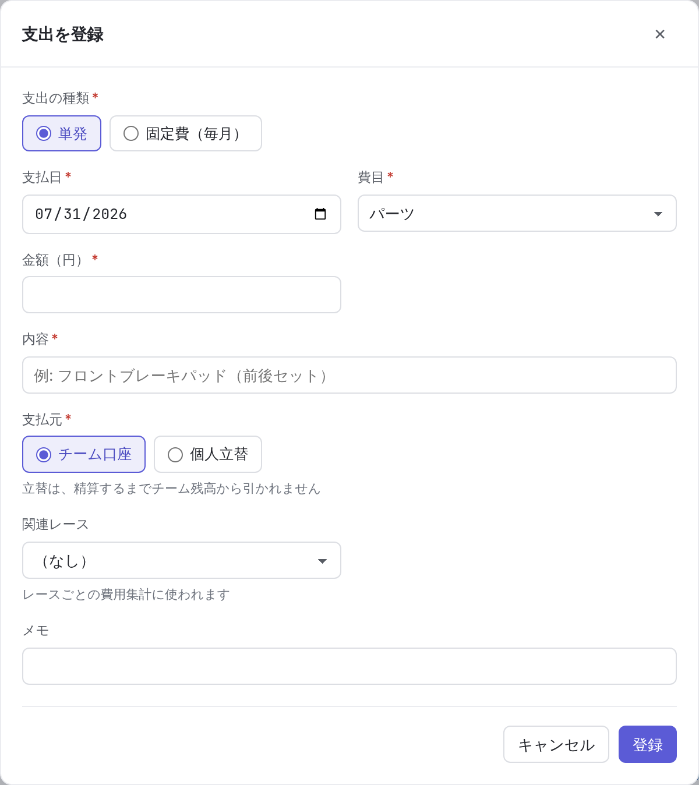
関連レースを選んでおくと、そのレースにいくらかかったかが自動で集計されます （参加費・遠征費・タイヤ代など）。空欄でも構いません。
ガレージ代や保険のように毎月決まった日に払うものは、「支出の種類」で 「固定費（毎月）」を選びます。単発との違いは毎月の支払日を入れるだけで、 ほかの項目は同じです。
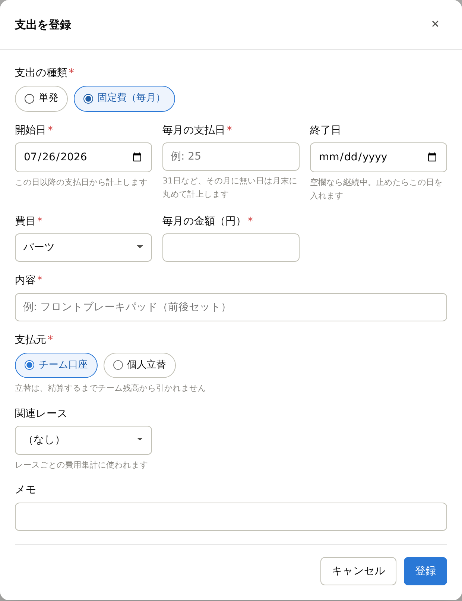
1回登録すれば、毎月の支払日が来るたびに自動で計上されます。一覧には1行だけ表示され、 金額は「今日までの合計」（例：毎月 ¥35,000 × 2回 = ¥70,000）になります。
解約したら終了日を入れてください。その日以降は計上されなくなり、 それまでの記録はそのまま残ります。
立替たお金を本人に返したら、忘れずに精算済みにしてください。 これをしないと、チーム残高が実際より多く見えてしまいます。
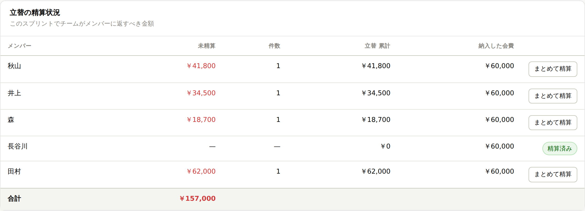
予算を区切る単位です。区切るタイミングはチームが自由に決めます （シーズンの節目、大きなレースが終わったとき、など）。 スプリントは名前が空のまま自動で始まります。名前は後からいつでも付けられます。
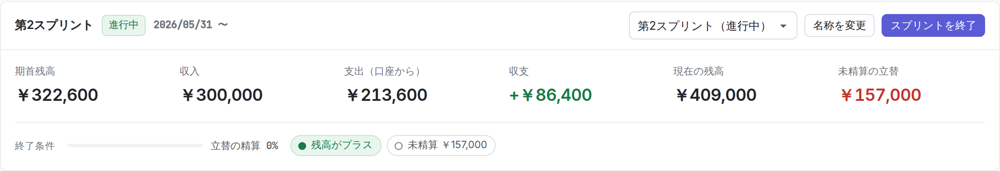
スプリントを終えるときの条件を、このアプリでは次の2つと考えています。
精算プランは、その状態にするために誰にいくら返し、誰からいくら集めればよいかを 自動で計算します。「終了時に残すチーム残高」を入れ替えると、その場で計算し直されます。
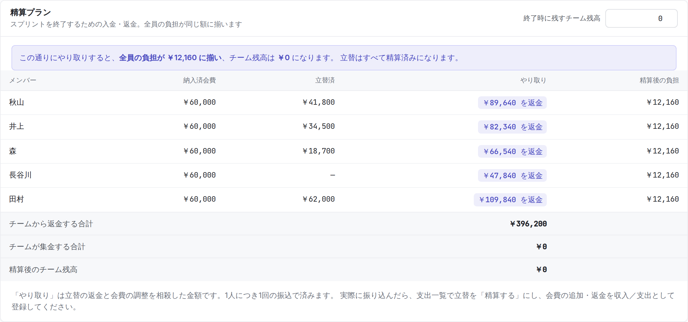
立替の返金と会費の調整をあらかじめ相殺してあるので、1人につき1回の振込で完了します。 「41,800円返して、さらに50,400円返す」ではなく「92,200円を返金」の1回です。
ある人の負担は、次のように考えています。
端数は1円単位まで配分されるので、精算後のチーム残高は入力した目標額とぴったり一致します （人によって最大1円だけ負担が違うことがあります）。
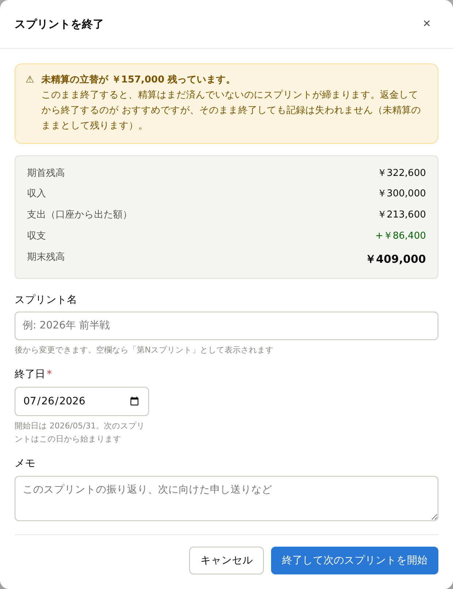
「終了したのに次が無い」状態にはなりません。次のスプリントは名前が空の状態で始まります。
止めはしませんが警告が出ます。記録は失われず「未精算のまま」として次に持ち越されます。 できるだけ精算を済ませてから終了してください。
ページ下部の「スプリントの記録」に、これまでの全スプリントが並びます。 「表示」を押すと、そのスプリントの収支・精算状況・費目別・支出／収入の一覧に切り替わります。 スプリントカード右上のプルダウンからも切り替えられます。
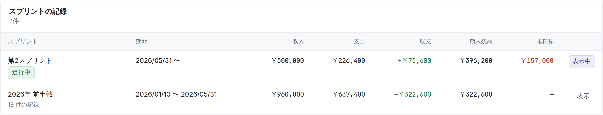
スプリントの期間に入る入出金が、そのスプリントの数字になります。だから固定費は 毎月ぶんが、その月のスプリントの支出として数えられます（登録したスプリントに まとめて乗ることはありません）。締めたあとに思い出した過去日付の支出を登録すると、 その日付のスプリントの数字が変わります。境界の日（前のスプリントの終了日）は 前のスプリントの分として数えます。
「整備を記録」から入力します。項目は5つだけです。
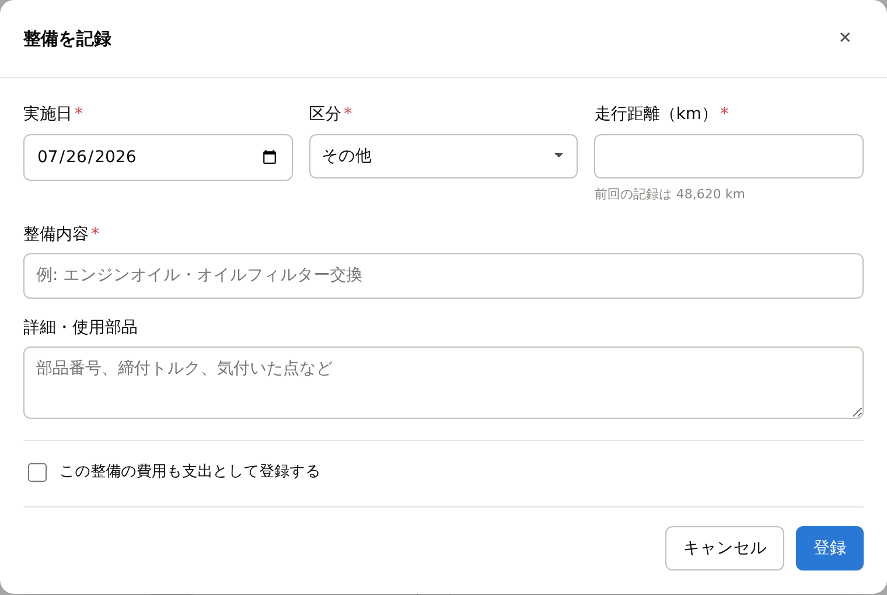
「この整備の費用も支出として登録する」にチェックを入れると、 整備記録と紐付いた支出が同時に作られます。予算管理側にも自動で反映されるので、二重入力は不要です。
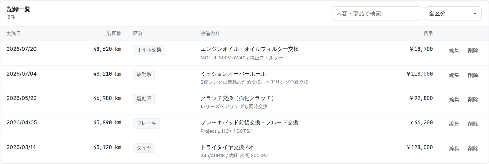
費用の列に「費用を追加」ボタンがある行は、まだ金額が紐付いていない整備です。 領収書が後から出てきたときは、ここから登録できます。
出場を検討し始めた時点で登録しておくのがおすすめです。 申込開始日と申込締切日を入れておくと、 近づいたときに画面上部で知らせてくれます。
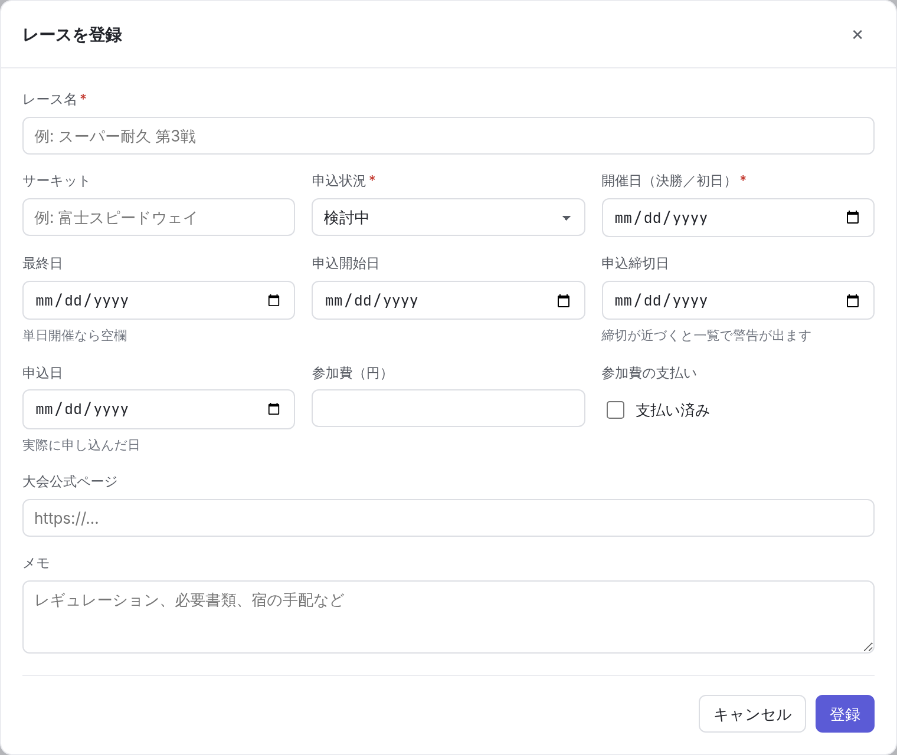
一覧のプルダウンでその場で切り替えられます。編集画面を開く必要はありません。 左の色付きの丸で、どこまで進んでいるかが一目で分かります。
| 検討中 | 出るかどうか検討している |
|---|---|
| 参加予定 | 出ると決めた。まだ申し込んでいない |
| 申込済 | 申し込んだ（選ぶと申込日が自動で入ります） |
| エントリー受理 | 主催者側で受理された |
| 終了 / 不参加 / 中止 | それぞれの状態 |
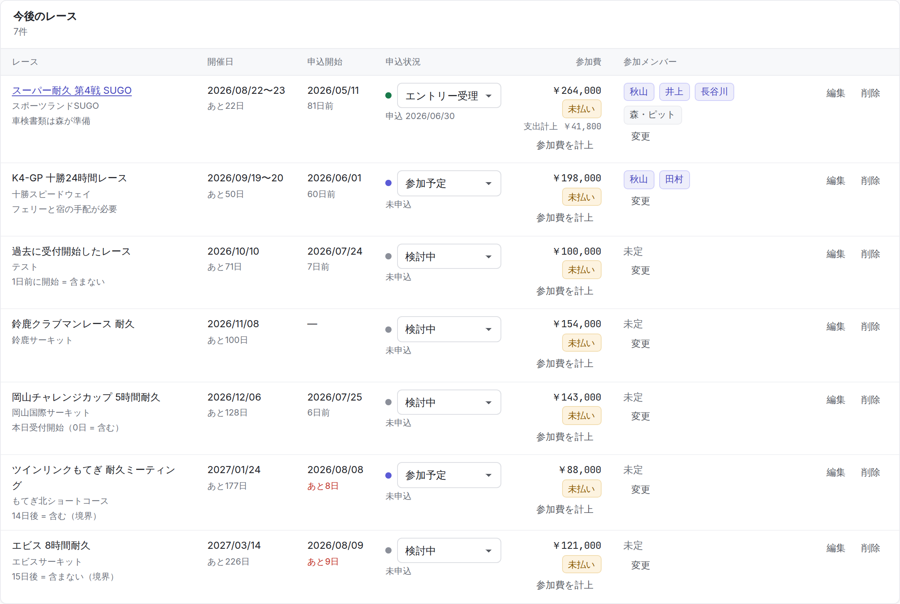
参加費を払ったら「参加費を計上」を押してください。 支出として登録され、同時にそのレースが「支払済」になります。
参加メンバー欄の「変更」から、出る人と役割（ドライバー／ピット／サポート）を選べます。 耐久のドライバーラインナップの共有に使ってください。
通常は自動で反映されます。反映されないときは画面を一度リロードしてください。 画面右上の時刻が「いつ時点のデータか」を示しています。
まず未精算の立替を確認してください。誰かに返金したのに「精算する」を押し忘れていると、 アプリ上の残高が実際より多くなります。「立替の精算状況」で未精算が残っていないか見てください。
一覧の各行にある「編集」「削除」から直せます。終了したスプリントの記録も修正できます （修正すると残高も自動で計算し直されます）。
立替の支払者として支出に記録されている人は削除できません。「誰が払ったか」を後から消せてしまうと 会計が追えなくなるためです。「名前を変更」で対応してください。
Supabase の管理画面（Authentication → Users）で共有アカウントのパスワードを更新します。 アプリ側の変更は不要です。変更後も、すでにログイン中の人はそのまま使えます。
| 画面に出るメッセージ | 対処 |
|---|---|
| パスワードが違うか、メールアドレスが一致していません | パスワードを確認してください。何度やっても入れない場合は管理者に連絡を。 |
| 通信に失敗しました | ネットワークを確認してください。しばらく使っていないとデータベースが休止していることがあります。 |
| データベースの更新がまだです（列 ○○ がありません） | アプリの新機能に対してデータベース側の更新が済んでいません。管理者に連絡してください。 |
| 立替の場合は立替者を選んでください | 支払元を「個人立替」にしたときは、立替者の選択が必須です。 |
データベースが自動で休止するためです。データが消えることはありません。 管理者が管理画面から復帰させれば元通り使えます。
| 用語 | 意味 |
|---|---|
| チーム残高 | チーム口座に今いくらあるか。通帳の残高と一致します。未精算の立替は含みません。 |
| 立替（たてかえ） | メンバーが自腹で払った支出。返金するまでチーム残高は減りません。 |
| 未精算 | 立替たまま、まだ本人に返していない金額。 |
| 精算 | 立替た人にチームからお金を返すこと。返したら「精算する」を押します。 |
| 精算後見込み残高 | 未精算の立替をすべて返したら、いくら残るか。 |
| スプリント | 予算を区切る単位。終わるタイミングはチームが決めます。 |
| 期首残高 / 期末残高 | そのスプリントの開始時点 / 終了時点のチーム残高。 |
| 負担 | その人が実質いくら出したか。納めた会費＋未精算の立替。 |
| 精算プラン | 全員の負担を揃えるために、誰にいくら返し・誰から集めるかの計算結果。 |
| 固定費 | 毎月決まった日に払う支出。1回登録すれば毎月自動で計上されます。 |
| 発生ベース | 実際にお金が動いたかに関わらず、支出が発生した時点で数える見方。「費目別の支出」はこちらです。 |
アプリの画面はこれからも変わっていきます。使いにくいところ、分かりにくい表示があれば 遠慮なく言ってください。ガイドもあわせて更新します。